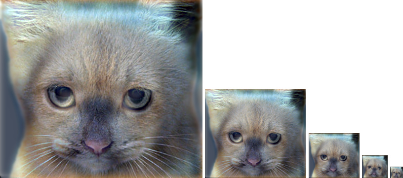
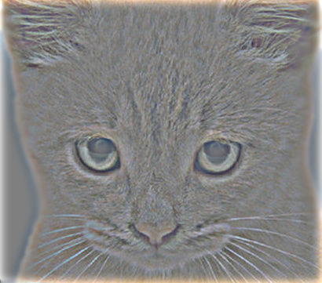
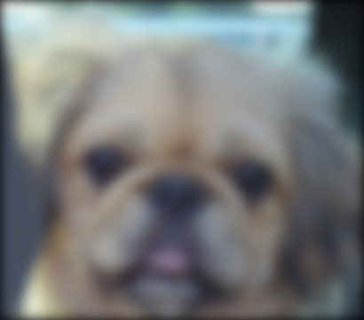
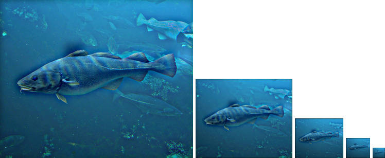
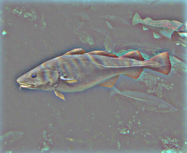

Example of a hybrid image.
For this project I was given the task of creating a hybrid image using image filtering.
Initially, I processed the image using a series of for loops (to loop by image channel, row, and column). I would grab a block from the image, perform an element-wise dot product on it with the filter, calculate the sum, and then throw it back in the original image. This worked but it proved to be extremely slow. Dr. Denning mentioned in class that matrix multiplication (in comparison to looping) is much faster in MATLAB, so I worked on figuring out how I could calculate the entire image at once.
During my research, I discovered the im2col function. I realized that if I converted the image into a series of columns with N rows, I could then multiply by a filter with N rows. All that I needed to do was transpose the filter from an M by N matrix, and then I could calculate the dot product from the result of im2col. Then I converted the image back using col2im. I did this individually for each color channel so I could support both grayscale and color images.
[image_height, image_width, num_channels] = size(image);
margin_h = (size(filter, 1) - 1) / 2;
margin_v = (size(filter, 2) - 1) / 2;
result = zeros(image_height, image_width, num_channels);
%Loop through each color channel
for channel = 1:num_channels
% Padded array to handle missing information in image
padded_image = padarray(image(:, :, channel), [margin_h margin_v]);
% Calculate dot product of filter and sliding array from image
% Transpose filter and convert each fw by fh block from the image into a column
temp = filter(:)' * im2col(padded_image, size(filter), 'sliding');
% Convert columns back into image and return the result
result(:,:,channel) = col2im(temp, [1 1], [image_height image_width]);
end
|   |
|   |